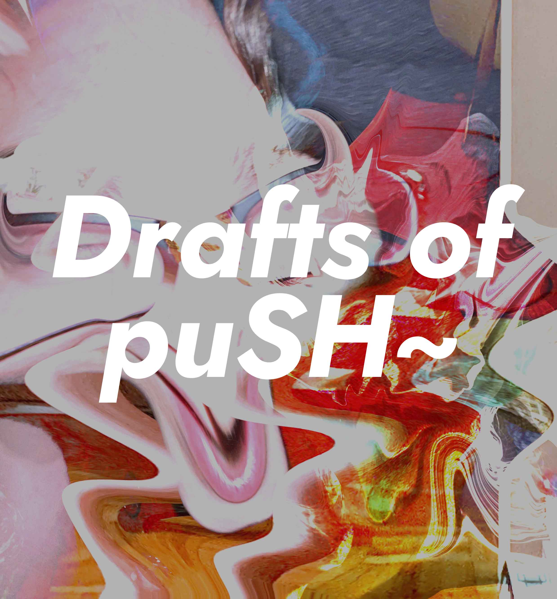
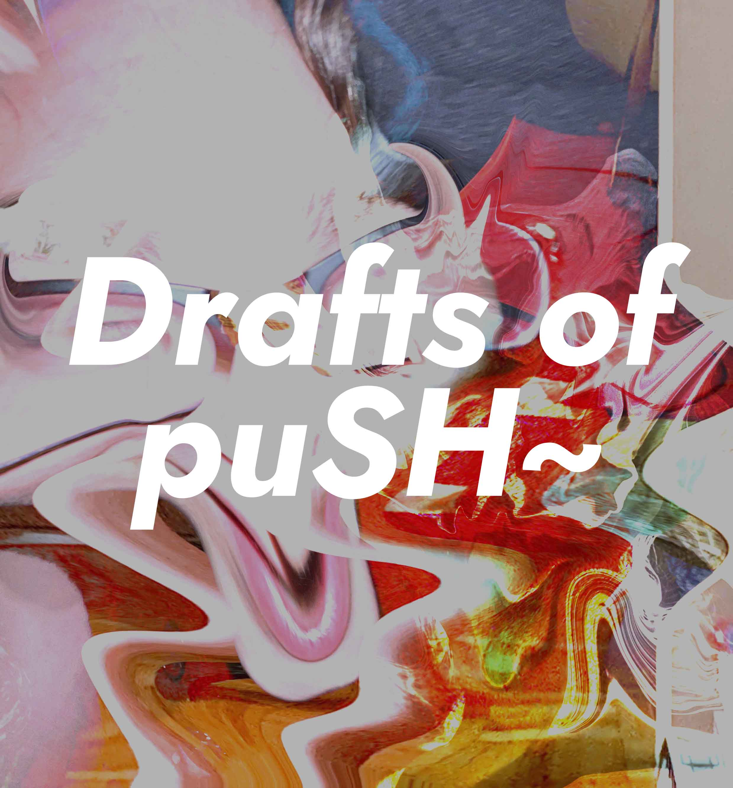

This project is a continuous digital exploration and iteration of my body. Through the manipulation of gendered features, I’m trying to break down and understand my identity and construct characteristics that are physically and medically unattainable to me. I am a perpetual novice—constantly understanding and forever perceiving.
Click the images within the gallery below to navigate the series in chronological order, starting at puSH I and ending with puSH X. This experience will guide you in understanding the continuous narrative that is building on itself in each part.
10 July 2021 - 21 February 2022. 174 digital images